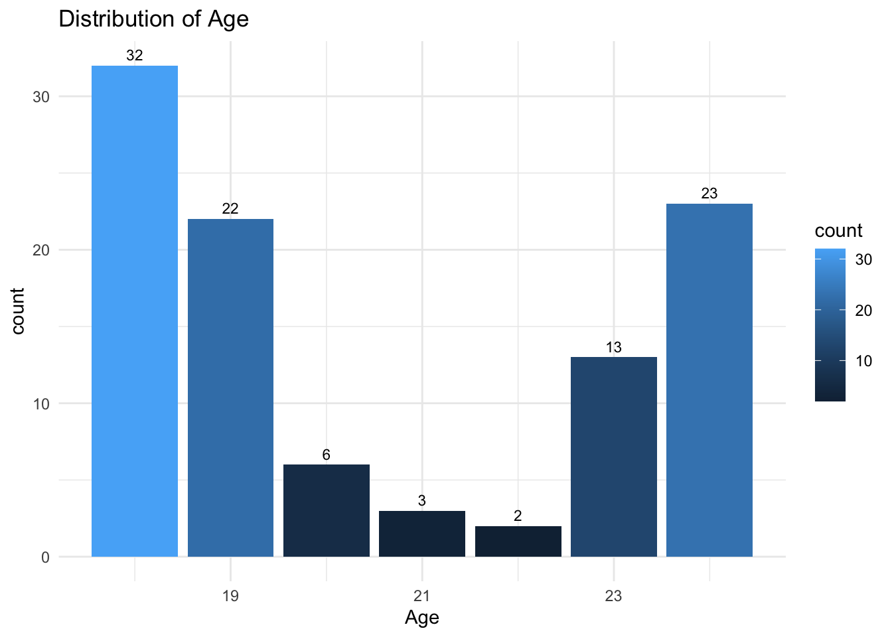
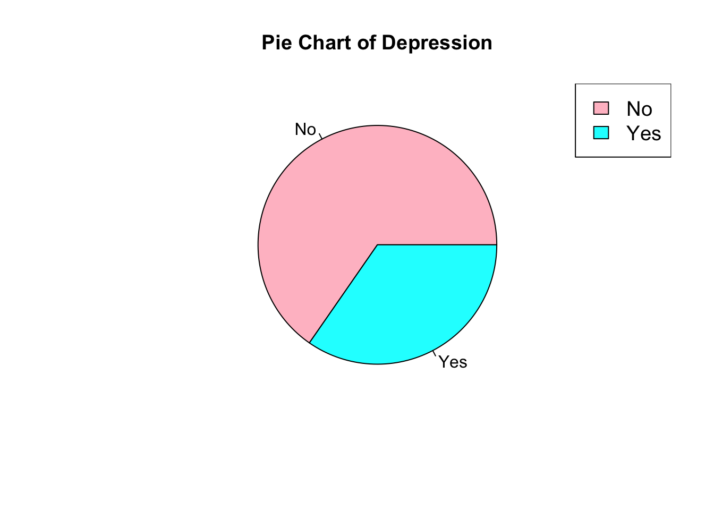
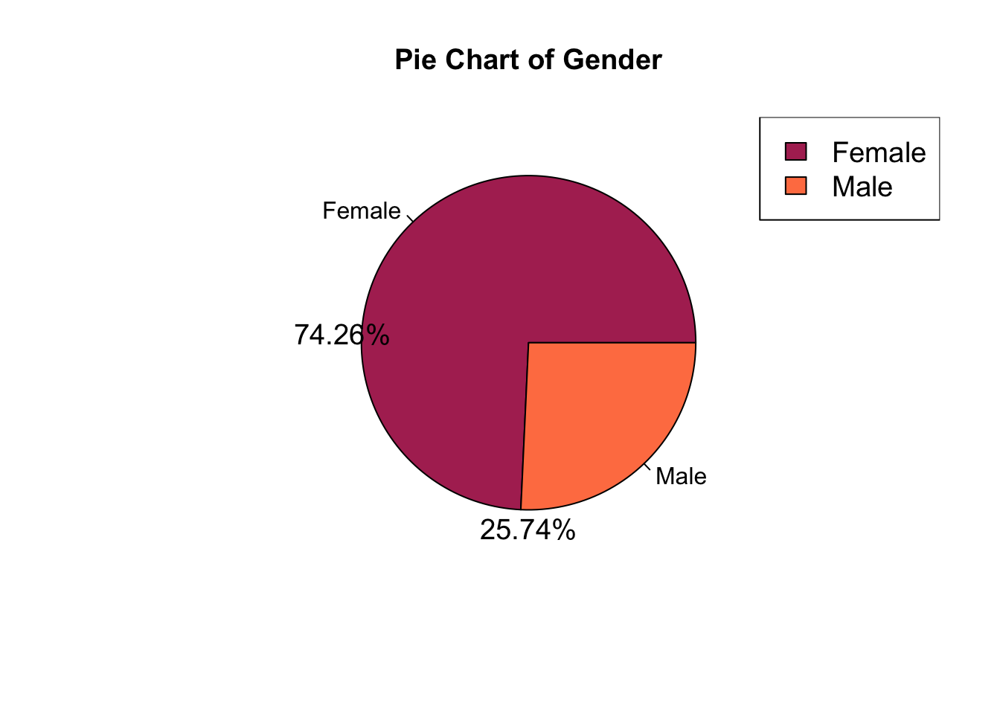
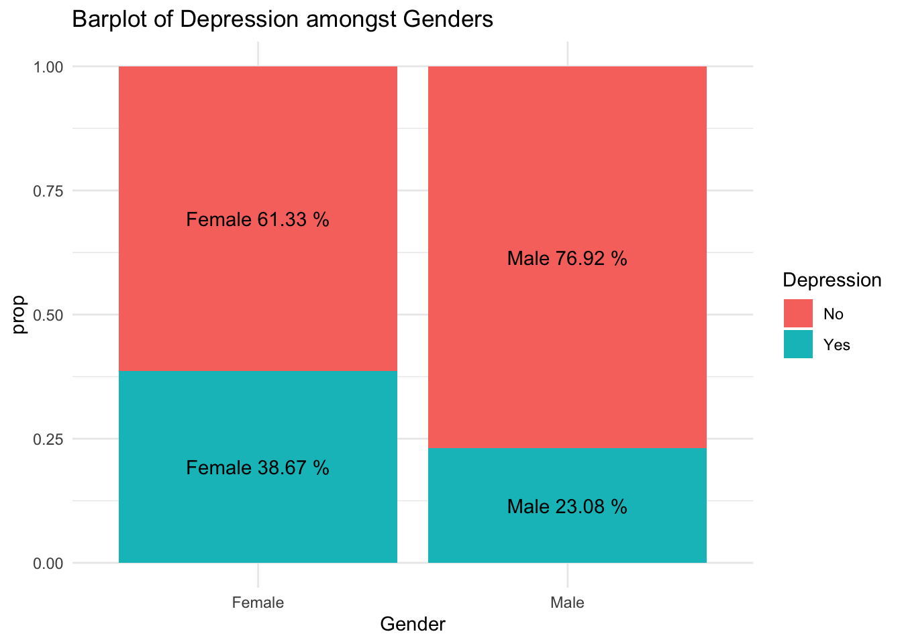
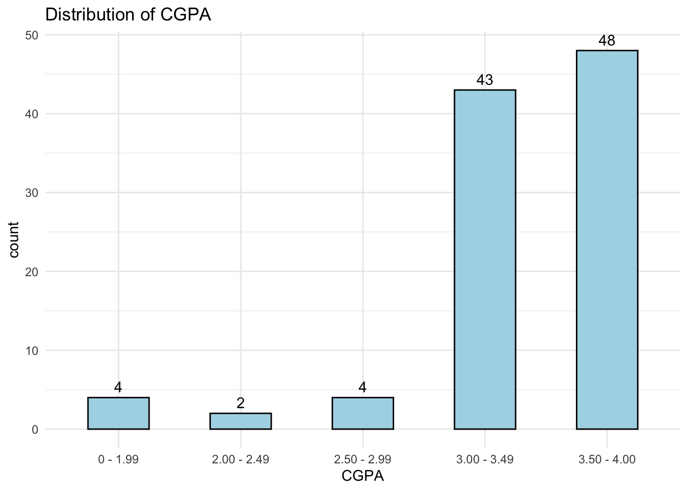
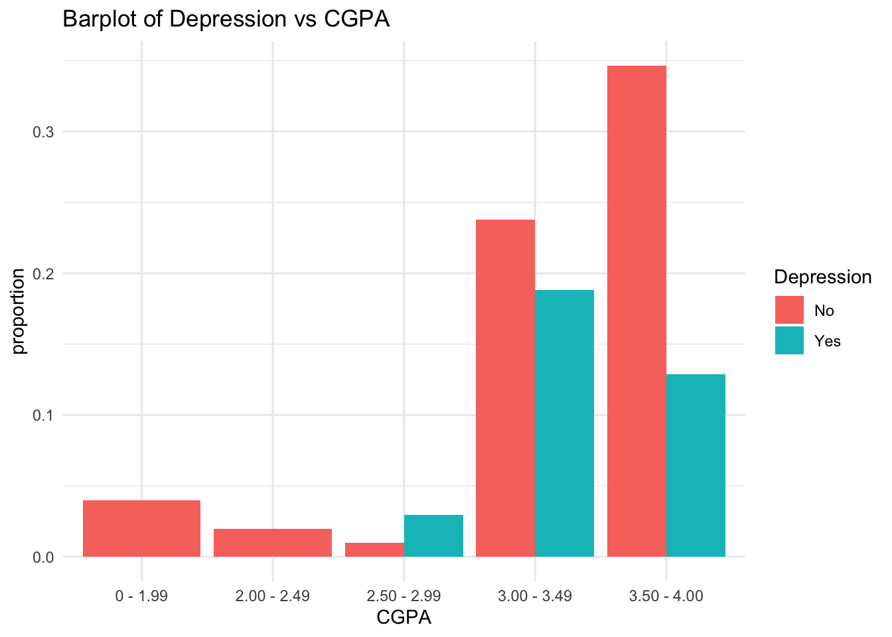
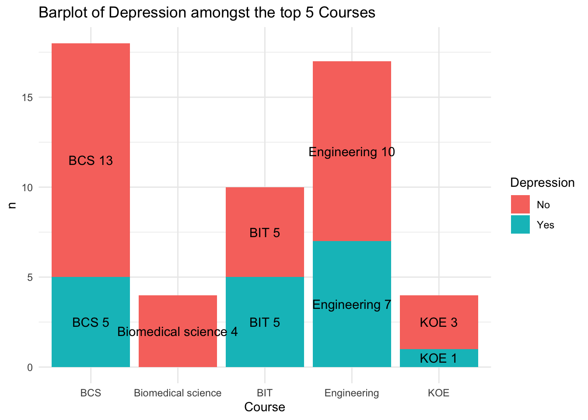

health <-read_csv("~/Desktop/603_Spring_2023/posts/_data/student_mental.csv")
Rows: 101 Columns: 11
── Column specification ────────────────────────────────────────────────────────
Delimiter: ","
chr (10): Timestamp, Choose your gender, What is your course?, Your current ...
dbl (1): Age
ℹ Use `spec()` to retrieve the full column specification for this data.
ℹ Specify the column types or set `show_col_types = FALSE` to quiet this message.
Timestamp Gender Age Course Year CGPA
FALSE FALSE TRUE FALSE FALSE FALSE
Married Depression Anxiety Panic_Attack Treatment
FALSE FALSE FALSE FALSE FALSE
Code
which(is.na(health$Age))
[1] 44
Code
health[44,'Age'] <-median(health$Age, na.rm =T)
Code
# Assuming you have a data frame named 'health'# Group by Age and calculate the countgrouped_data <- health %>%group_by(Age) %>%summarize(count =n())# Create the bar plot using ggplot2ggplot(grouped_data, aes(x = Age, y = count, fill = count)) +geom_bar(stat ="identity") +geom_text(aes(label = count), vjust =-0.5, size =3) +labs(title ="Distribution of Age") +theme_minimal()

This graph provides a visual representation of the population count across different age groups.
Code
Health_SummaryStat <- health %>%group_by(Gender) %>%summarise(count =n(),percentage =round((n()/nrow(health)), digits =4))Health_SummaryStat
# A tibble: 2 × 3
Gender count percentage
<chr> <int> <dbl>
1 Female 75 0.743
2 Male 26 0.257
Code
Health_SummaryStat2 <- health %>%group_by(Depression) %>%summarise(count =n(),percentage =round((n()/nrow(health)), digits =4))colors <-c("pink", "cyan", "blue") # Define colors for the pie chart# Create the pie chart using the pie() functionpie(Health_SummaryStat2$percentage, labels = Health_SummaryStat2$Depression,col = colors,main ="Pie Chart of Depression",cex.main =1.2,cex.lab =1.2)# Add a legendlegend("topright", legend = Health_SummaryStat2$Depression,fill = colors, cex =1.2)

This pie chart depicts that 34.6% of the sample exhibited symptoms of depression, which is significantly higher than the average population rate of 5.0% among adults.
Code
# Define the colors for the pie chartcolors <-c("Maroon", "Coral")# Create the data for the pie chartpie_data <- Health_SummaryStat$percentagenames(pie_data) <- Health_SummaryStat$Gender# Create the pie chart using the pie() functionpie(pie_data, labels =names(pie_data),col = colors,main ="Pie Chart of Gender",cex.main =1.2,cex.lab =1.2)# Add the percentage values inside the pie chartlabel_pos <-1.2*max(pie_data)percent_labels <-paste(round(pie_data *100, digits =2), "%", sep ="")text(x = label_pos *sin(2* pi *cumsum(pie_data)), y =-label_pos *cos(2* pi *cumsum(pie_data)),labels = percent_labels, cex =1.2)# Add a legendlegend("topright", legend =names(pie_data),fill = colors, cex =1.2)

This pie chart illustrates that females comprise 74.3% of the observations, while males account for the remaining 25.7%.
Code
health %>%count(Gender, Depression, sort = F) %>%group_by(Gender) %>%mutate(prop =round((n /sum(n)), digits =4)) %>%ggplot(aes(x = Gender, y = prop, fill = Depression)) +geom_bar(stat ="identity") +geom_text(aes(label =paste(Gender, prop *100, "%")), position =position_stack(vjust =0.5)) +labs(title ="Barplot of Depression amongst Genders") +theme_minimal()

This bar plot provides a visual representation of depression cases among males and females. The results indicate that, on average, females had a higher incidence of depression compared to males. The percentage of females experiencing depression was 38.67%, while for males it was 23.08%. This suggests a higher prevalence of depression among females in the observed population.
health %>%group_by(CGPA) %>%summarize(count =n()) %>%ggplot(aes(x = CGPA, y = count)) +geom_bar(stat ="identity",fill ="lightblue", # Replace with the desired color name or hexadecimal color codecolor ="black",width =0.5) +geom_text(aes(label = count),vjust =-0.5,color ="black") +labs(title ="Distribution of CGPA") +theme_minimal()

This bar graph provides a visual representation of the distribution of CGPA (Cumulative Grade Point Average) among a group of individuals.
The graph shows that the majority of the members, specifically 48 individuals, have a CGPA in the range of 3.50-4.00, indicating a high level of academic achievement. On the other hand, there are only 4 individuals who have a CGPA in the lower range of 0-1.99, suggesting a lower level of academic performance.
Additionally, there are 43 members who fall within the CGPA range of 3.00-3.49, indicating a moderate level of academic achievement. Furthermore, 4 members have a CGPA between 2.50-2.99, and 2 members have a CGPA ranging from 2.00-2.49.
Overall, this distribution suggests a varied range of CGPA scores among the group, with a significant number of individuals achieving high CGPA scores and a smaller number falling into lower CGPA ranges.
Code
health %>%count(CGPA, Depression, sort = F) %>%mutate(proportion =round((n /sum(n)), digits =4)) %>%ggplot(aes(x = CGPA, y = proportion, fill = Depression)) +geom_bar(stat ="identity", position ="dodge") +labs(title ="Barplot of Depression vs CGPA") +theme_minimal()

Based on the given data, we cannot observe any clear patterns or a straightforward relationship between CGPA (Cumulative Grade Point Average) and depression. However, there seems to be a non-monotonic increase in the rate of depression as CGPA increases. It is important to note that the group sizes for each CGPA category may be inadequate to draw definitive conclusions.
If we had access to more precise CGPA values rather than the broad ranges provided, we would have been able to obtain a clearer and more accurate understanding of the relationship between CGPA and depression. However, based on the available data, we can observe a slight positive association between CGPA and the rate of depression. This suggests that as CGPA increases, there is a tendency for the depression rate to also increase, although the relationship may not be linear or consistent across all CGPA ranges.
Code
health %>%filter(grepl('BIT|KOE|BCS|Engineering|Biomedical science', Course)) %>%count(Course, Depression, sort = T) %>%group_by(Course) %>%mutate(prop =round((n /sum(n)), digits =4)) %>%ggplot(aes(x = Course, y = n, fill = Depression)) +geom_bar(stat ="identity") +geom_text(aes(label =paste(Course, n)),position =position_stack(vjust =0.5),color ="black") +labs(title ="Barplot of Depression amongst the top 5 Courses") +theme_minimal()

Engineering students seem to have the most cases of depression, and surprisingly 0 came out of the Bio medical group. Group sizes too small to make any conclusive associations.
Source Code
---title: "Final_checkIn 2"author: "Sai Padma pothula"desription: ""date: "05/02/2023"format: html: toc: true code-fold: true code-copy: true code-tools: truecategories: - Final checkIn 1 - sai Pothula---```{r}library(tidyverse)library(readr)library(ggplot2)``````{R}health <-read_csv("~/Desktop/603_Spring_2023/posts/_data/student_mental.csv")``````{r}names(health) <-c('Timestamp', 'Gender', 'Age', 'Course', 'Year', 'CGPA', 'Married', 'Depression', 'Anxiety', 'Panic_Attack', 'Treatment')indx <-apply(health, 2, function(x) any(is.na(x)))indx``````{r}which(is.na(health$Age))``````{r}health[44,'Age'] <-median(health$Age, na.rm =T)``````{r}# Assuming you have a data frame named 'health'# Group by Age and calculate the countgrouped_data <- health %>%group_by(Age) %>%summarize(count =n())# Create the bar plot using ggplot2ggplot(grouped_data, aes(x = Age, y = count, fill = count)) +geom_bar(stat ="identity") +geom_text(aes(label = count), vjust =-0.5, size =3) +labs(title ="Distribution of Age") +theme_minimal()```This graph provides a visual representation of the population count across different age groups.```{r}Health_SummaryStat <- health %>%group_by(Gender) %>%summarise(count =n(),percentage =round((n()/nrow(health)), digits =4))Health_SummaryStat``````{r}Health_SummaryStat2 <- health %>%group_by(Depression) %>%summarise(count =n(),percentage =round((n()/nrow(health)), digits =4))colors <-c("pink", "cyan", "blue") # Define colors for the pie chart# Create the pie chart using the pie() functionpie(Health_SummaryStat2$percentage, labels = Health_SummaryStat2$Depression,col = colors,main ="Pie Chart of Depression",cex.main =1.2,cex.lab =1.2)# Add a legendlegend("topright", legend = Health_SummaryStat2$Depression,fill = colors, cex =1.2)```This pie chart depicts that 34.6% of the sample exhibited symptoms of depression, which is significantly higher than the average population rate of 5.0% among adults.```{r}# Define the colors for the pie chartcolors <-c("Maroon", "Coral")# Create the data for the pie chartpie_data <- Health_SummaryStat$percentagenames(pie_data) <- Health_SummaryStat$Gender# Create the pie chart using the pie() functionpie(pie_data, labels =names(pie_data),col = colors,main ="Pie Chart of Gender",cex.main =1.2,cex.lab =1.2)# Add the percentage values inside the pie chartlabel_pos <-1.2*max(pie_data)percent_labels <-paste(round(pie_data *100, digits =2), "%", sep ="")text(x = label_pos *sin(2* pi *cumsum(pie_data)), y =-label_pos *cos(2* pi *cumsum(pie_data)),labels = percent_labels, cex =1.2)# Add a legendlegend("topright", legend =names(pie_data),fill = colors, cex =1.2)```This pie chart illustrates that females comprise 74.3% of the observations, while males account for the remaining 25.7%.```{r}health %>%count(Gender, Depression, sort = F) %>%group_by(Gender) %>%mutate(prop =round((n /sum(n)), digits =4)) %>%ggplot(aes(x = Gender, y = prop, fill = Depression)) +geom_bar(stat ="identity") +geom_text(aes(label =paste(Gender, prop *100, "%")), position =position_stack(vjust =0.5)) +labs(title ="Barplot of Depression amongst Genders") +theme_minimal()```This bar plot provides a visual representation of depression cases among males and females. The results indicate that, on average, females had a higher incidence of depression compared to males. The percentage of females experiencing depression was 38.67%, while for males it was 23.08%. This suggests a higher prevalence of depression among females in the observed population.```{r}health$CGPA <-as.factor(health$CGPA)levels(health$CGPA)``````{r}health %>%group_by(CGPA) %>%summarize(count =n()) %>%ggplot(aes(x = CGPA, y = count)) +geom_bar(stat ="identity",fill ="lightblue", # Replace with the desired color name or hexadecimal color codecolor ="black",width =0.5) +geom_text(aes(label = count),vjust =-0.5,color ="black") +labs(title ="Distribution of CGPA") +theme_minimal()```This bar graph provides a visual representation of the distribution of CGPA (Cumulative Grade Point Average) among a group of individuals. The graph shows that the majority of the members, specifically 48 individuals, have a CGPA in the range of 3.50-4.00, indicating a high level of academic achievement. On the other hand, there are only 4 individuals who have a CGPA in the lower range of 0-1.99, suggesting a lower level of academic performance.Additionally, there are 43 members who fall within the CGPA range of 3.00-3.49, indicating a moderate level of academic achievement. Furthermore, 4 members have a CGPA between 2.50-2.99, and 2 members have a CGPA ranging from 2.00-2.49.Overall, this distribution suggests a varied range of CGPA scores among the group, with a significant number of individuals achieving high CGPA scores and a smaller number falling into lower CGPA ranges.```{r}health %>%count(CGPA, Depression, sort = F) %>%mutate(proportion =round((n /sum(n)), digits =4)) %>%ggplot(aes(x = CGPA, y = proportion, fill = Depression)) +geom_bar(stat ="identity", position ="dodge") +labs(title ="Barplot of Depression vs CGPA") +theme_minimal()```Based on the given data, we cannot observe any clear patterns or a straightforward relationship between CGPA (Cumulative Grade Point Average) and depression. However, there seems to be a non-monotonic increase in the rate of depression as CGPA increases. It is important to note that the group sizes for each CGPA category may be inadequate to draw definitive conclusions. If we had access to more precise CGPA values rather than the broad ranges provided, we would have been able to obtain a clearer and more accurate understanding of the relationship between CGPA and depression. However, based on the available data, we can observe a slight positive association between CGPA and the rate of depression. This suggests that as CGPA increases, there is a tendency for the depression rate to also increase, although the relationship may not be linear or consistent across all CGPA ranges.```{r}health %>%filter(grepl('BIT|KOE|BCS|Engineering|Biomedical science', Course)) %>%count(Course, Depression, sort = T) %>%group_by(Course) %>%mutate(prop =round((n /sum(n)), digits =4)) %>%ggplot(aes(x = Course, y = n, fill = Depression)) +geom_bar(stat ="identity") +geom_text(aes(label =paste(Course, n)),position =position_stack(vjust =0.5),color ="black") +labs(title ="Barplot of Depression amongst the top 5 Courses") +theme_minimal()```Engineering students seem to have the most cases of depression, and surprisingly 0 came out of the Bio medical group. Group sizes too small to make any conclusive associations.